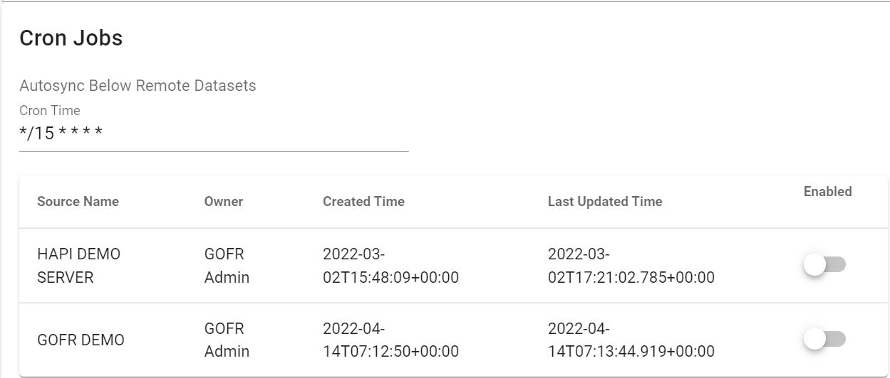

Configure System¶
Under 'Configure System' the admin/ users of the system are able to set up some constraints for the system
Under Configure System, we have user configurations as well as admin configurations in gofr.
User Configuration¶
User Defined Headers
This constraint is used to define which headers should be used, on uploading of a new data source
Once a new data source is uploaded to the system, using a CSV or a remote source, the user can select to use the headers used in the source, or to use the system default headers.

Active Datasource for Facility Registry
Users can select the datasource which will be active in the 'Facility Registry' module. By default, this data source is the same as the active data source for the user.
To select -> click on the drop- down and pick the preferred data source.

Admin Configurations¶
The administrator configurations are done by the system admin of GOFR and affect all users in the system.
Matching configuration¶
While carrying out the matching process in Facility Reconciliation, there's an option to restrict matching to facilities with the same parent.
Once the Perform match based on parent constraint option is activated, this means, the parent of the facilities must be the same for matching to occur. If deselected, facilities with different parents can also be matched.
If the Perform match based on constraint is activated, the user can choose to:
- Automatch by ID - Use the ID to match the facilities
- Automatch by name - Use the facility name(s) to match facilities
Dataset configuration¶
There are a few options for datasets which should be set up. They include:
Choose how datasets can be added in the system
The admin can restrict the data sources to be used in the system by selecting from the list. To make a source unavailable for use, simple uncheck the respective box from the list provided.
Allow sharing of datasets to all users by non-admins
Users without admin permissions can be allowed to share a datasource to 'all users' by selecting this option.

Sharing of a datasource by admins is allowed by default.
Select a datasource to serve as Source 2 for all reconciliation
Once this option is selected, reconciliation can only be done against the source which is selected under this option. This restricts users from carrying out reconciliation and matching against other data sources in the system.

Single data source per user
Once activated, this restricts users to only one data source.

GOFR Authentication¶
Once activated, this
Self Registration¶
There are two options available.Once activated:
- Enable Self Registration- Allows new users to register and create their own accounts on gofr
- Require Admin Approval of Self Registration - Requires the admin to approve all accounts created on gofr through self registration.
Public Access¶
The admin can activate public access and select the partition which will be accessible by the public users of gofr.
Cron Jobs¶
GOFR gives users ability to automatically sync data from remote datasets by enabling cron jobs and selecting the time the synchronization takes place.

Email configuration¶
SMTP configurations for email notifications are captured here.